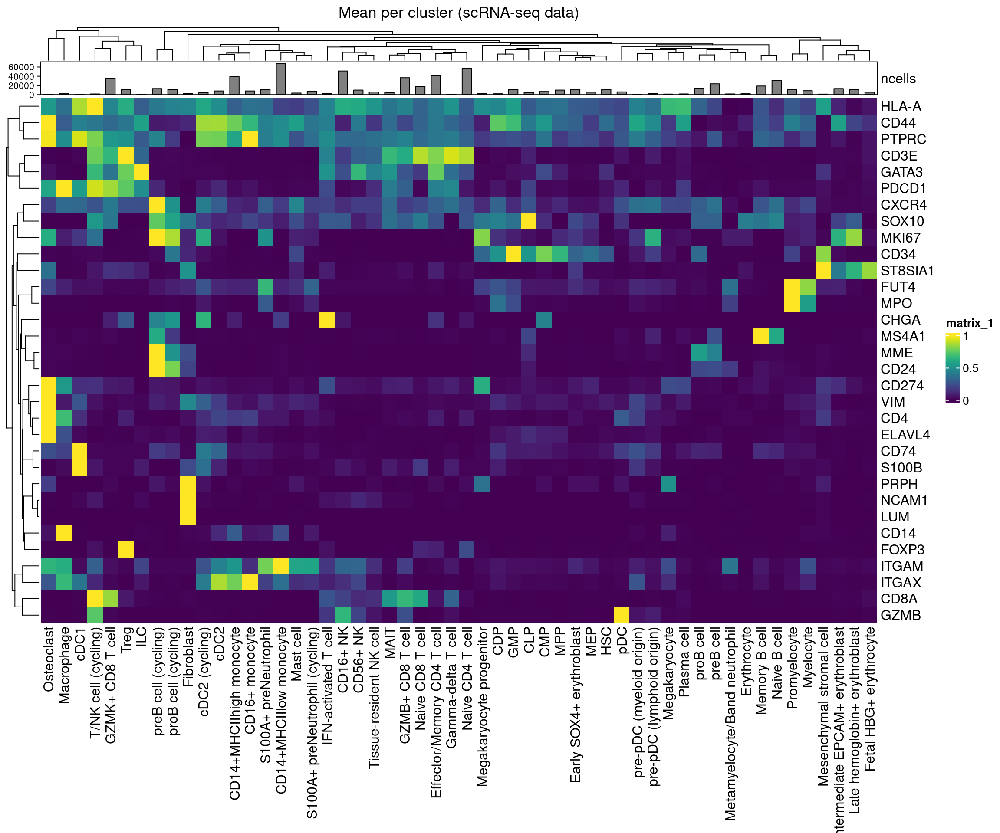
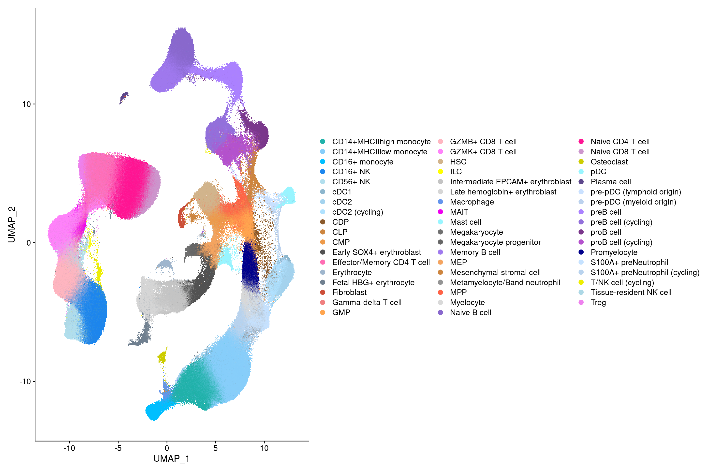
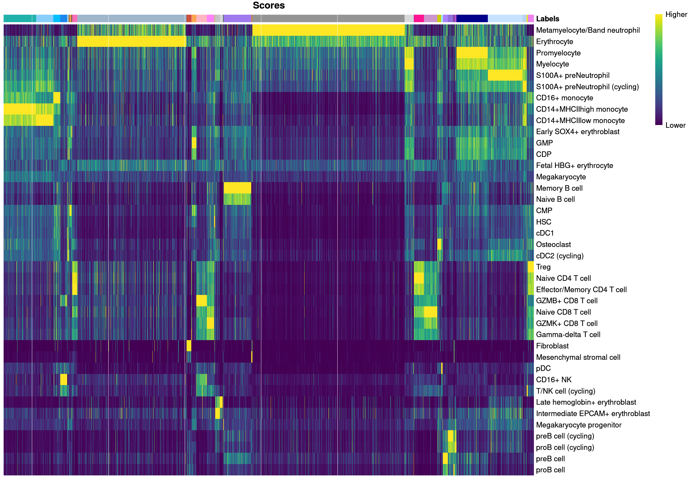
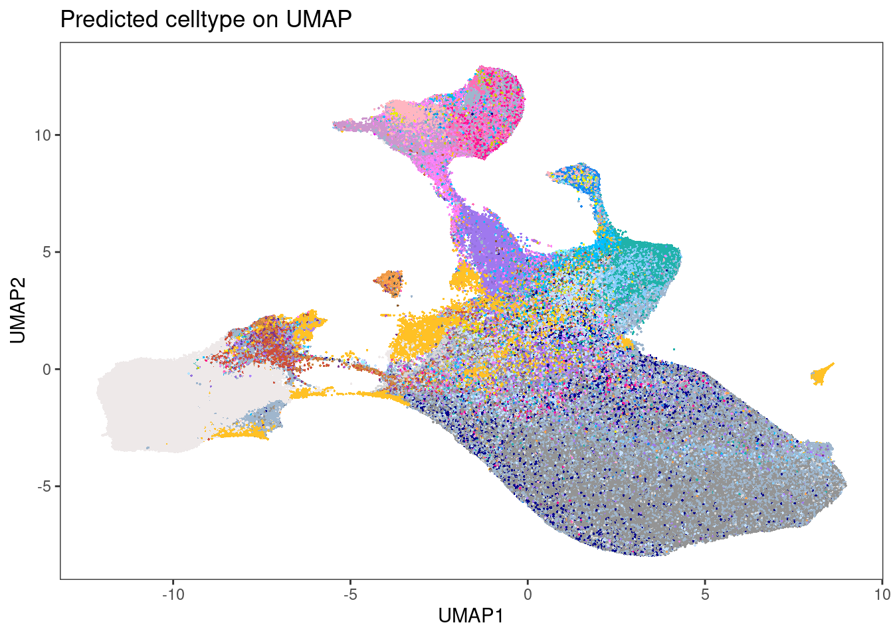

Last updated: 2024-03-28
Checks: 6 1
Knit directory: MapMetSC/
This reproducible R Markdown analysis was created with workflowr (version 1.7.1). The Checks tab describes the reproducibility checks that were applied when the results were created. The Past versions tab lists the development history.
The R Markdown file has unstaged changes. To know which version of
the R Markdown file created these results, you’ll want to first commit
it to the Git repo. If you’re still working on the analysis, you can
ignore this warning. When you’re finished, you can run
wflow_publish to commit the R Markdown file and build the
HTML.
Great job! The global environment was empty. Objects defined in the global environment can affect the analysis in your R Markdown file in unknown ways. For reproduciblity it’s best to always run the code in an empty environment.
The command set.seed(20240314) was run prior to running
the code in the R Markdown file. Setting a seed ensures that any results
that rely on randomness, e.g. subsampling or permutations, are
reproducible.
Great job! Recording the operating system, R version, and package versions is critical for reproducibility.
Nice! There were no cached chunks for this analysis, so you can be confident that you successfully produced the results during this run.
Great job! Using relative paths to the files within your workflowr project makes it easier to run your code on other machines.
Great! You are using Git for version control. Tracking code development and connecting the code version to the results is critical for reproducibility.
The results in this page were generated with repository version 0ba6b0c. See the Past versions tab to see a history of the changes made to the R Markdown and HTML files.
Note that you need to be careful to ensure that all relevant files for
the analysis have been committed to Git prior to generating the results
(you can use wflow_publish or
wflow_git_commit). workflowr only checks the R Markdown
file, but you know if there are other scripts or data files that it
depends on. Below is the status of the Git repository when the results
were generated:
Unstaged changes:
Modified: analysis/05_correlation_Jansky.Rmd
Modified: analysis/05_correlation_Lee.Rmd
Note that any generated files, e.g. HTML, png, CSS, etc., are not included in this status report because it is ok for generated content to have uncommitted changes.
These are the previous versions of the repository in which changes were
made to the R Markdown (analysis/05_correlation_Lee.Rmd)
and HTML (docs/05_correlation_Lee.html) files. If you’ve
configured a remote Git repository (see ?wflow_git_remote),
click on the hyperlinks in the table below to view the files as they
were in that past version.
| File | Version | Author | Date | Message |
|---|---|---|---|---|
| Rmd | 0ba6b0c | LazDaria | 2024-03-28 | public_datasets |
To evaluate the validity of tumor microenviroment (TME) cell phenotype annnotations, we compare the cell expression profiles to a previously generated scRNA-seq dataset of healthy human bone marrow of ages ranging from 2-84 years (Lee et al.).
library(Seurat)Loading required package: SeuratObjectLoading required package: sp'SeuratObject' was built with package 'Matrix' 1.6.4 but the current
version is 1.6.5; it is recomended that you reinstall 'SeuratObject' as
the ABI for 'Matrix' may have changed
Attaching package: 'SeuratObject'The following object is masked from 'package:base':
intersectlibrary(dplyr)
Attaching package: 'dplyr'The following objects are masked from 'package:stats':
filter, lagThe following objects are masked from 'package:base':
intersect, setdiff, setequal, unionlibrary(bruceR)
bruceR (v2023.9)
Broadly Useful Convenient and Efficient R functions
Packages also loaded:
✔ data.table ✔ emmeans
✔ dplyr ✔ lmerTest
✔ tidyr ✔ effectsize
✔ stringr ✔ performance
✔ ggplot2 ✔ interactions
Main functions of `bruceR`:
cc() Describe() TTEST()
add() Freq() MANOVA()
.mean() Corr() EMMEANS()
set.wd() Alpha() PROCESS()
import() EFA() model_summary()
print_table() CFA() lavaan_summary()
For full functionality, please install all dependencies:
install.packages("bruceR", dep=TRUE)
Online documentation:
https://psychbruce.github.io/bruceR
To use this package in publications, please cite:
Bao, H.-W.-S. (2023). bruceR: Broadly useful convenient and efficient R functions (Version 2023.9) [Computer software]. https://CRAN.R-project.org/package=bruceRlibrary(ComplexHeatmap)Loading required package: grid========================================
ComplexHeatmap version 2.12.1
Bioconductor page: http://bioconductor.org/packages/ComplexHeatmap/
Github page: https://github.com/jokergoo/ComplexHeatmap
Documentation: http://jokergoo.github.io/ComplexHeatmap-reference
If you use it in published research, please cite either one:
- Gu, Z. Complex heatmaps reveal patterns and correlations in multidimensional
genomic data. Bioinformatics 2016.
- Gu, Z. Complex Heatmap Visualization. iMeta 2022.
The new InteractiveComplexHeatmap package can directly export static
complex heatmaps into an interactive Shiny app with zero effort. Have a try!
This message can be suppressed by:
suppressPackageStartupMessages(library(ComplexHeatmap))
========================================library(viridis)Loading required package: viridisLitelibrary(BiocParallel)
library(SingleR)Loading required package: SummarizedExperimentLoading required package: MatrixGenericsLoading required package: matrixStats
Attaching package: 'matrixStats'The following object is masked from 'package:dplyr':
count
Attaching package: 'MatrixGenerics'The following objects are masked from 'package:matrixStats':
colAlls, colAnyNAs, colAnys, colAvgsPerRowSet, colCollapse,
colCounts, colCummaxs, colCummins, colCumprods, colCumsums,
colDiffs, colIQRDiffs, colIQRs, colLogSumExps, colMadDiffs,
colMads, colMaxs, colMeans2, colMedians, colMins, colOrderStats,
colProds, colQuantiles, colRanges, colRanks, colSdDiffs, colSds,
colSums2, colTabulates, colVarDiffs, colVars, colWeightedMads,
colWeightedMeans, colWeightedMedians, colWeightedSds,
colWeightedVars, rowAlls, rowAnyNAs, rowAnys, rowAvgsPerColSet,
rowCollapse, rowCounts, rowCummaxs, rowCummins, rowCumprods,
rowCumsums, rowDiffs, rowIQRDiffs, rowIQRs, rowLogSumExps,
rowMadDiffs, rowMads, rowMaxs, rowMeans2, rowMedians, rowMins,
rowOrderStats, rowProds, rowQuantiles, rowRanges, rowRanks,
rowSdDiffs, rowSds, rowSums2, rowTabulates, rowVarDiffs, rowVars,
rowWeightedMads, rowWeightedMeans, rowWeightedMedians,
rowWeightedSds, rowWeightedVarsLoading required package: GenomicRangesLoading required package: stats4Loading required package: BiocGenerics
Attaching package: 'BiocGenerics'The following objects are masked from 'package:dplyr':
combine, intersect, setdiff, unionThe following object is masked from 'package:SeuratObject':
intersectThe following objects are masked from 'package:stats':
IQR, mad, sd, var, xtabsThe following objects are masked from 'package:base':
anyDuplicated, append, as.data.frame, basename, cbind, colnames,
dirname, do.call, duplicated, eval, evalq, Filter, Find, get, grep,
grepl, intersect, is.unsorted, lapply, Map, mapply, match, mget,
order, paste, pmax, pmax.int, pmin, pmin.int, Position, rank,
rbind, Reduce, rownames, sapply, setdiff, sort, table, tapply,
union, unique, unsplit, which.max, which.minLoading required package: S4Vectors
Attaching package: 'S4Vectors'The following objects are masked from 'package:Matrix':
expand, unnameThe following objects are masked from 'package:data.table':
first, secondThe following object is masked from 'package:tidyr':
expandThe following objects are masked from 'package:dplyr':
first, renameThe following objects are masked from 'package:base':
expand.grid, I, unnameLoading required package: IRanges
Attaching package: 'IRanges'The following object is masked from 'package:data.table':
shiftThe following objects are masked from 'package:dplyr':
collapse, desc, sliceThe following object is masked from 'package:sp':
%over%Loading required package: GenomeInfoDbLoading required package: BiobaseWelcome to Bioconductor
Vignettes contain introductory material; view with
'browseVignettes()'. To cite Bioconductor, see
'citation("Biobase")', and for packages 'citation("pkgname")'.
Attaching package: 'Biobase'The following object is masked from 'package:MatrixGenerics':
rowMediansThe following objects are masked from 'package:matrixStats':
anyMissing, rowMedians
Attaching package: 'SummarizedExperiment'The following object is masked from 'package:Seurat':
AssaysThe following object is masked from 'package:SeuratObject':
Assayslibrary(dittoSeq)First, we load the processed and phenotyped single-cell data from chapter 4 and the published Seurat object
containing the scRNA-seq data. Please make sure to replace
params$publicwith the path to the scRNA-seq data.
# IMC data
protein <- readRDS(file.path(params$output,"spe_final.rds"))
protein <- protein[rowData(protein)$use_channel,]Loading required package: SpatialExperimentLoading required package: SingleCellExperimentcol_celltype <- metadata(protein)$color_vectors$col_celltype
protein <- protein[,protein$metacluster!="tumor" & protein$metacluster!="other"]
#scRNA-seq data
rna <- readRDS(file.path(params$public,"Lee/disco_bone_marrow_v2.0.rds"))
DefaultAssay(rna) <- "RNA"
rna@assays$RNA@data <- rna@assays$RNA@countsNext, we will set common markers between the reference and query dataset. Therefore, we have to rename the features in the imaging dataset to the names of the corresponding genes.
protein2gene <- read.csv(file.path(params$public,"protein2gene.csv"), sep=";")
code <- setNames(protein2gene$genes, protein2gene$protein)
rownames(protein) <- recode(rownames(protein), !!!code)
rowData(protein)$name <- rownames(protein)
rowData(protein)$channel <- rownames(protein)
#reduce metadata
metadata <- c("sample_id", "ObjectNumber", "sample", "tissue", "celltype", "metacluster")
colData(protein) <- colData(protein)[, metadata]
common_features <- intersect(rownames(rna@assays$RNA@data), row.names(protein))Will will first visualize the scRNA-seq data. Therefore we first define a color code with similar colors for similar celltypes between IMC and scRNA-seq.
col_clusters <- read.csv(file.path(params$public, "Lee/celltype_metacluster.csv"), sep=";")
col_clust <- setNames(col_clusters$color, col_clusters$celltype)
col_clust <- c(col_clust, c("tumor" = "snow2", "other"="goldenrod1"))rna_clusters <- rna@active.ident
rna_data <- GetAssayData(rna, assay = "RNA", slot = "data")[common_features, ]
rna_mean <- aggregate(t(rna_data), list(rna_clusters), mean)
rna_mean_t <- t(rna_mean[,2:ncol(rna_mean)])
colnames(rna_mean_t) <- rna_mean[,"Group.1"]
rna_mean_scaled <- t(apply(rna_mean_t, 1, RESCALE, to=0:1))
column_ha = HeatmapAnnotation(ncells=anno_barplot(as.data.frame(table(rna_clusters))[,"Freq"], height = unit(1, "cm")),
show_legend=F)
Heatmap(rna_mean_scaled,
column_title = "Mean per cluster (scRNA-seq data)",
top_annotation = column_ha,
cluster_columns=T,
show_column_dend = T,
show_column_names=T,
show_row_names=T,
col=viridis(100)
)
DimPlot(rna, reduction="umap", cols=col_clust)Rasterizing points since number of points exceeds 100,000.
To disable this behavior set `raster=FALSE`
Finally, we will investigate correlation between the datasets using label transfer by singleR.
rna_mat <- GetAssayData(rna, assay = "RNA", slot = "data")[common_features, ]
rna_clusters <- rna@active.ident
protein_mat <- assay(protein, "counts")[common_features, ]
#remove Seurat and SPE object prior to parallel computation
rm(rna)
rm(protein)
predicted_labels <- SingleR(test = protein_mat, ref = rna_mat, labels = rna_clusters, BPPARAM = MulticoreParam(workers=16, RNGseed=20231030))
plotScoreHeatmap(predicted_labels[sample(seq_len(nrow(predicted_labels)), 2000),],annotation_colors=list(Labels = col_clust), annotation_legend=F, treeheight_row=0) #define colors first
We will plot the predicted metalabels in a UMAP.
#save predicted labels in separate slot
protein <- readRDS(file.path(params$output,"spe_final.rds"))
protein$celltype_predicted <- "tumor"
protein[,protein$metacluster=="other"]$celltype_predicted <- "other"
protein[,rownames(predicted_labels)]$celltype_predicted <- predicted_labels$labels
metadata(protein)$color_vectors$col_predicted_label <- col_clust
p1 <- dittoDimPlot(protein, var = "celltype_predicted",
reduction.use = "UMAP", size = 0.3, labels.size=2,
do.label = F,
legend.show=F) +
scale_color_manual(values = metadata(protein)$color_vectors$col_predicted_label) +
theme(legend.title = element_blank()) +
ggtitle("Predicted celltype on UMAP")Scale for colour is already present.
Adding another scale for colour, which will replace the existing scale.p1
R version 4.2.0 (2022-04-22)
Platform: x86_64-pc-linux-gnu (64-bit)
Running under: Ubuntu 20.04.4 LTS
Matrix products: default
BLAS: /usr/lib/x86_64-linux-gnu/openblas-pthread/libblas.so.3
LAPACK: /usr/lib/x86_64-linux-gnu/openblas-pthread/liblapack.so.3
locale:
[1] LC_CTYPE=en_US.UTF-8 LC_NUMERIC=C
[3] LC_TIME=en_US.UTF-8 LC_COLLATE=en_US.UTF-8
[5] LC_MONETARY=en_US.UTF-8 LC_MESSAGES=en_US.UTF-8
[7] LC_PAPER=en_US.UTF-8 LC_NAME=C
[9] LC_ADDRESS=C LC_TELEPHONE=C
[11] LC_MEASUREMENT=en_US.UTF-8 LC_IDENTIFICATION=C
attached base packages:
[1] stats4 grid stats graphics grDevices utils datasets
[8] methods base
other attached packages:
[1] SpatialExperiment_1.6.1 SingleCellExperiment_1.20.1
[3] dittoSeq_1.8.1 SingleR_1.10.0
[5] SummarizedExperiment_1.26.1 Biobase_2.56.0
[7] GenomicRanges_1.48.0 GenomeInfoDb_1.32.4
[9] IRanges_2.30.1 S4Vectors_0.34.0
[11] BiocGenerics_0.42.0 MatrixGenerics_1.8.1
[13] matrixStats_1.1.0 BiocParallel_1.30.4
[15] viridis_0.6.4 viridisLite_0.4.2
[17] ComplexHeatmap_2.12.1 ggplot2_3.4.4
[19] interactions_1.1.5 lmerTest_3.1-3
[21] lme4_1.1-35.1 Matrix_1.6-5
[23] performance_0.10.8 effectsize_0.8.6
[25] emmeans_1.9.0 data.table_1.14.10
[27] stringr_1.5.1 tidyr_1.3.0
[29] bruceR_2023.9 dplyr_1.1.4
[31] Seurat_5.0.1 SeuratObject_5.0.1
[33] sp_2.1-2 workflowr_1.7.1
loaded via a namespace (and not attached):
[1] estimability_1.4.1 scattermore_1.2
[3] R.methodsS3_1.8.2 coda_0.19-4
[5] knitr_1.45 R.utils_2.12.3
[7] irlba_2.3.5.1 multcomp_1.4-25
[9] DelayedArray_0.22.0 RCurl_1.98-1.14
[11] doParallel_1.0.17 generics_0.1.3
[13] ScaledMatrix_1.4.1 callr_3.7.3
[15] cowplot_1.1.2 TH.data_1.1-2
[17] RANN_2.6.1 future_1.33.1
[19] spatstat.data_3.0-4 httpuv_1.6.13
[21] xfun_0.41 jquerylib_0.1.4
[23] evaluate_0.23 promises_1.2.1
[25] fansi_1.0.6 igraph_1.6.0
[27] htmlwidgets_1.6.4 spatstat.geom_3.2-7
[29] purrr_1.0.2 ellipsis_0.3.2
[31] RSpectra_0.16-1 insight_0.19.7
[33] deldir_2.0-2 sparseMatrixStats_1.8.0
[35] vctrs_0.6.5 Cairo_1.6-2
[37] ROCR_1.0-11 abind_1.4-5
[39] cachem_1.0.8 withr_3.0.0
[41] progressr_0.14.0 sctransform_0.4.1
[43] goftest_1.2-3 cluster_2.1.3
[45] dotCall64_1.1-1 lazyeval_0.2.2
[47] crayon_1.5.2 spatstat.explore_3.2-5
[49] labeling_0.4.3 edgeR_3.38.4
[51] pkgconfig_2.0.3 nlme_3.1-157
[53] rlang_1.1.3 globals_0.16.2
[55] lifecycle_1.0.4 miniUI_0.1.1.1
[57] sandwich_3.1-0 fastDummies_1.7.3
[59] rsvd_1.0.5 rprojroot_2.0.4
[61] polyclip_1.10-6 RcppHNSW_0.5.0
[63] lmtest_0.9-40 datawizard_0.9.1
[65] Rhdf5lib_1.18.2 boot_1.3-28
[67] zoo_1.8-12 whisker_0.4.1
[69] ggridges_0.5.5 GlobalOptions_0.1.2
[71] processx_3.8.3 pheatmap_1.0.12
[73] png_0.1-8 rjson_0.2.21
[75] parameters_0.21.3 bitops_1.0-7
[77] R.oo_1.25.0 getPass_0.2-4
[79] KernSmooth_2.23-20 spam_2.10-0
[81] rhdf5filters_1.8.0 pander_0.6.5
[83] DelayedMatrixStats_1.18.2 shape_1.4.6
[85] parallelly_1.36.0 spatstat.random_3.2-2
[87] beachmat_2.12.0 scales_1.3.0
[89] magrittr_2.0.3 plyr_1.8.9
[91] ica_1.0-3 zlibbioc_1.42.0
[93] compiler_4.2.0 dqrng_0.3.2
[95] RColorBrewer_1.1-3 clue_0.3-65
[97] fitdistrplus_1.1-11 cli_3.6.2
[99] XVector_0.36.0 listenv_0.9.0
[101] patchwork_1.2.0 pbapply_1.7-2
[103] ps_1.7.6 MASS_7.3-56
[105] tidyselect_1.2.0 stringi_1.8.3
[107] highr_0.10 jtools_2.2.2
[109] yaml_2.3.8 locfit_1.5-9.8
[111] BiocSingular_1.12.0 ggrepel_0.9.5
[113] sass_0.4.8 tools_4.2.0
[115] future.apply_1.11.1 parallel_4.2.0
[117] circlize_0.4.15 rstudioapi_0.15.0
[119] foreach_1.5.2 git2r_0.33.0
[121] gridExtra_2.3 farver_2.1.1
[123] Rtsne_0.17 DropletUtils_1.16.0
[125] digest_0.6.34 shiny_1.8.0
[127] Rcpp_1.0.12 scuttle_1.6.3
[129] later_1.3.2 RcppAnnoy_0.0.21
[131] httr_1.4.7 colorspace_2.1-0
[133] fs_1.6.3 tensor_1.5
[135] reticulate_1.34.0 splines_4.2.0
[137] uwot_0.1.16 spatstat.utils_3.0-4
[139] plotly_4.10.4 xtable_1.8-4
[141] jsonlite_1.8.8 nloptr_2.0.3
[143] R6_2.5.1 pillar_1.9.0
[145] htmltools_0.5.7 mime_0.12
[147] glue_1.7.0 fastmap_1.1.1
[149] minqa_1.2.6 BiocNeighbors_1.14.0
[151] codetools_0.2-18 mvtnorm_1.2-4
[153] utf8_1.2.4 lattice_0.20-45
[155] bslib_0.6.1 spatstat.sparse_3.0-3
[157] tibble_3.2.1 numDeriv_2016.8-1.1
[159] leiden_0.4.3.1 magick_2.8.2
[161] limma_3.52.4 survival_3.3-1
[163] rmarkdown_2.25 munsell_0.5.0
[165] GetoptLong_1.0.5 rhdf5_2.40.0
[167] GenomeInfoDbData_1.2.8 iterators_1.0.14
[169] HDF5Array_1.24.2 reshape2_1.4.4
[171] gtable_0.3.4 bayestestR_0.13.1
sessionInfo()R version 4.2.0 (2022-04-22)
Platform: x86_64-pc-linux-gnu (64-bit)
Running under: Ubuntu 20.04.4 LTS
Matrix products: default
BLAS: /usr/lib/x86_64-linux-gnu/openblas-pthread/libblas.so.3
LAPACK: /usr/lib/x86_64-linux-gnu/openblas-pthread/liblapack.so.3
locale:
[1] LC_CTYPE=en_US.UTF-8 LC_NUMERIC=C
[3] LC_TIME=en_US.UTF-8 LC_COLLATE=en_US.UTF-8
[5] LC_MONETARY=en_US.UTF-8 LC_MESSAGES=en_US.UTF-8
[7] LC_PAPER=en_US.UTF-8 LC_NAME=C
[9] LC_ADDRESS=C LC_TELEPHONE=C
[11] LC_MEASUREMENT=en_US.UTF-8 LC_IDENTIFICATION=C
attached base packages:
[1] stats4 grid stats graphics grDevices utils datasets
[8] methods base
other attached packages:
[1] SpatialExperiment_1.6.1 SingleCellExperiment_1.20.1
[3] dittoSeq_1.8.1 SingleR_1.10.0
[5] SummarizedExperiment_1.26.1 Biobase_2.56.0
[7] GenomicRanges_1.48.0 GenomeInfoDb_1.32.4
[9] IRanges_2.30.1 S4Vectors_0.34.0
[11] BiocGenerics_0.42.0 MatrixGenerics_1.8.1
[13] matrixStats_1.1.0 BiocParallel_1.30.4
[15] viridis_0.6.4 viridisLite_0.4.2
[17] ComplexHeatmap_2.12.1 ggplot2_3.4.4
[19] interactions_1.1.5 lmerTest_3.1-3
[21] lme4_1.1-35.1 Matrix_1.6-5
[23] performance_0.10.8 effectsize_0.8.6
[25] emmeans_1.9.0 data.table_1.14.10
[27] stringr_1.5.1 tidyr_1.3.0
[29] bruceR_2023.9 dplyr_1.1.4
[31] Seurat_5.0.1 SeuratObject_5.0.1
[33] sp_2.1-2 workflowr_1.7.1
loaded via a namespace (and not attached):
[1] estimability_1.4.1 scattermore_1.2
[3] R.methodsS3_1.8.2 coda_0.19-4
[5] knitr_1.45 R.utils_2.12.3
[7] irlba_2.3.5.1 multcomp_1.4-25
[9] DelayedArray_0.22.0 RCurl_1.98-1.14
[11] doParallel_1.0.17 generics_0.1.3
[13] ScaledMatrix_1.4.1 callr_3.7.3
[15] cowplot_1.1.2 TH.data_1.1-2
[17] RANN_2.6.1 future_1.33.1
[19] spatstat.data_3.0-4 httpuv_1.6.13
[21] xfun_0.41 jquerylib_0.1.4
[23] evaluate_0.23 promises_1.2.1
[25] fansi_1.0.6 igraph_1.6.0
[27] htmlwidgets_1.6.4 spatstat.geom_3.2-7
[29] purrr_1.0.2 ellipsis_0.3.2
[31] RSpectra_0.16-1 insight_0.19.7
[33] deldir_2.0-2 sparseMatrixStats_1.8.0
[35] vctrs_0.6.5 Cairo_1.6-2
[37] ROCR_1.0-11 abind_1.4-5
[39] cachem_1.0.8 withr_3.0.0
[41] progressr_0.14.0 sctransform_0.4.1
[43] goftest_1.2-3 cluster_2.1.3
[45] dotCall64_1.1-1 lazyeval_0.2.2
[47] crayon_1.5.2 spatstat.explore_3.2-5
[49] labeling_0.4.3 edgeR_3.38.4
[51] pkgconfig_2.0.3 nlme_3.1-157
[53] rlang_1.1.3 globals_0.16.2
[55] lifecycle_1.0.4 miniUI_0.1.1.1
[57] sandwich_3.1-0 fastDummies_1.7.3
[59] rsvd_1.0.5 rprojroot_2.0.4
[61] polyclip_1.10-6 RcppHNSW_0.5.0
[63] lmtest_0.9-40 datawizard_0.9.1
[65] Rhdf5lib_1.18.2 boot_1.3-28
[67] zoo_1.8-12 whisker_0.4.1
[69] ggridges_0.5.5 GlobalOptions_0.1.2
[71] processx_3.8.3 pheatmap_1.0.12
[73] png_0.1-8 rjson_0.2.21
[75] parameters_0.21.3 bitops_1.0-7
[77] R.oo_1.25.0 getPass_0.2-4
[79] KernSmooth_2.23-20 spam_2.10-0
[81] rhdf5filters_1.8.0 pander_0.6.5
[83] DelayedMatrixStats_1.18.2 shape_1.4.6
[85] parallelly_1.36.0 spatstat.random_3.2-2
[87] beachmat_2.12.0 scales_1.3.0
[89] magrittr_2.0.3 plyr_1.8.9
[91] ica_1.0-3 zlibbioc_1.42.0
[93] compiler_4.2.0 dqrng_0.3.2
[95] RColorBrewer_1.1-3 clue_0.3-65
[97] fitdistrplus_1.1-11 cli_3.6.2
[99] XVector_0.36.0 listenv_0.9.0
[101] patchwork_1.2.0 pbapply_1.7-2
[103] ps_1.7.6 MASS_7.3-56
[105] tidyselect_1.2.0 stringi_1.8.3
[107] highr_0.10 jtools_2.2.2
[109] yaml_2.3.8 locfit_1.5-9.8
[111] BiocSingular_1.12.0 ggrepel_0.9.5
[113] sass_0.4.8 tools_4.2.0
[115] future.apply_1.11.1 parallel_4.2.0
[117] circlize_0.4.15 rstudioapi_0.15.0
[119] foreach_1.5.2 git2r_0.33.0
[121] gridExtra_2.3 farver_2.1.1
[123] Rtsne_0.17 DropletUtils_1.16.0
[125] digest_0.6.34 shiny_1.8.0
[127] Rcpp_1.0.12 scuttle_1.6.3
[129] later_1.3.2 RcppAnnoy_0.0.21
[131] httr_1.4.7 colorspace_2.1-0
[133] fs_1.6.3 tensor_1.5
[135] reticulate_1.34.0 splines_4.2.0
[137] uwot_0.1.16 spatstat.utils_3.0-4
[139] plotly_4.10.4 xtable_1.8-4
[141] jsonlite_1.8.8 nloptr_2.0.3
[143] R6_2.5.1 pillar_1.9.0
[145] htmltools_0.5.7 mime_0.12
[147] glue_1.7.0 fastmap_1.1.1
[149] minqa_1.2.6 BiocNeighbors_1.14.0
[151] codetools_0.2-18 mvtnorm_1.2-4
[153] utf8_1.2.4 lattice_0.20-45
[155] bslib_0.6.1 spatstat.sparse_3.0-3
[157] tibble_3.2.1 numDeriv_2016.8-1.1
[159] leiden_0.4.3.1 magick_2.8.2
[161] limma_3.52.4 survival_3.3-1
[163] rmarkdown_2.25 munsell_0.5.0
[165] GetoptLong_1.0.5 rhdf5_2.40.0
[167] GenomeInfoDbData_1.2.8 iterators_1.0.14
[169] HDF5Array_1.24.2 reshape2_1.4.4
[171] gtable_0.3.4 bayestestR_0.13.1